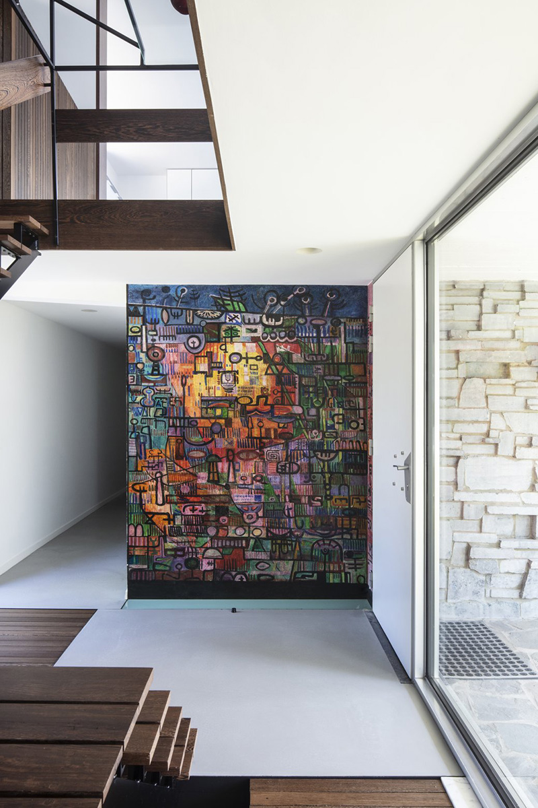
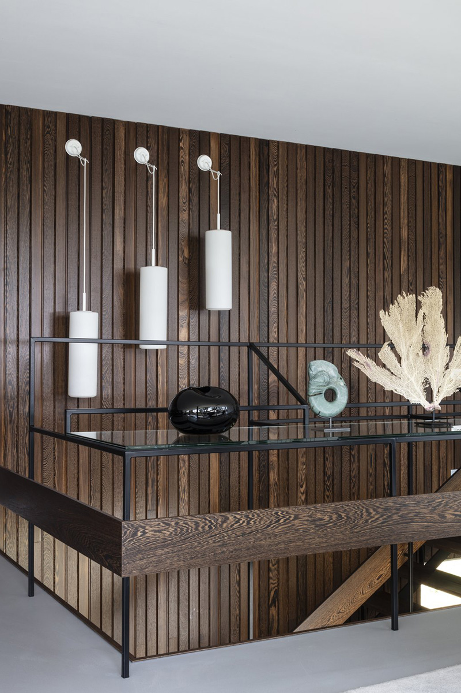
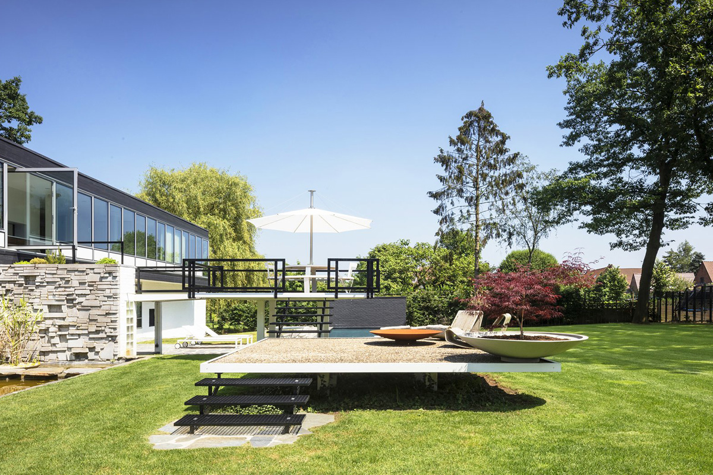
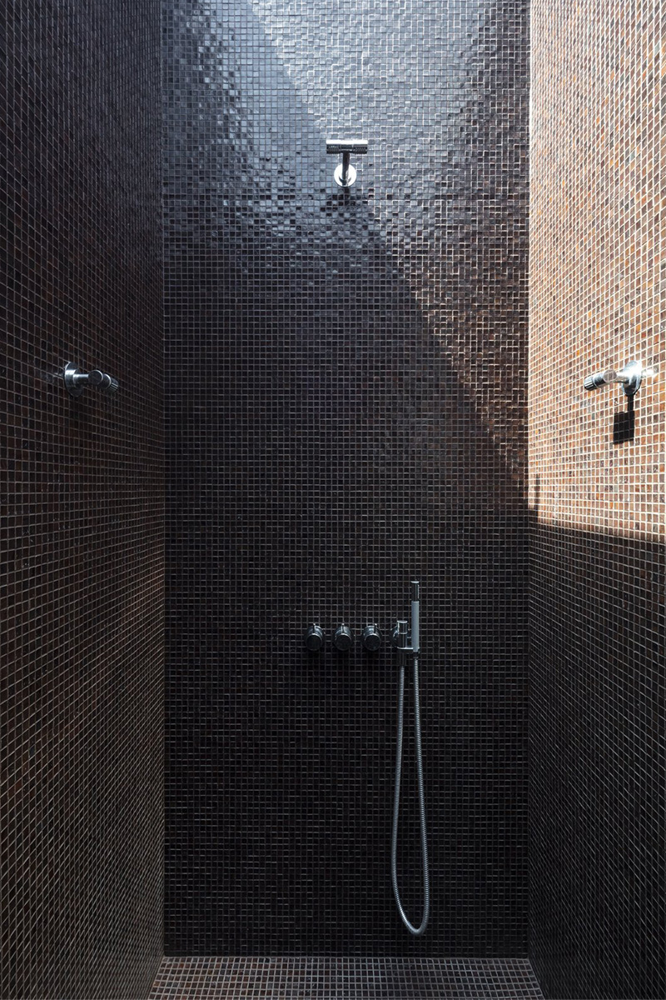
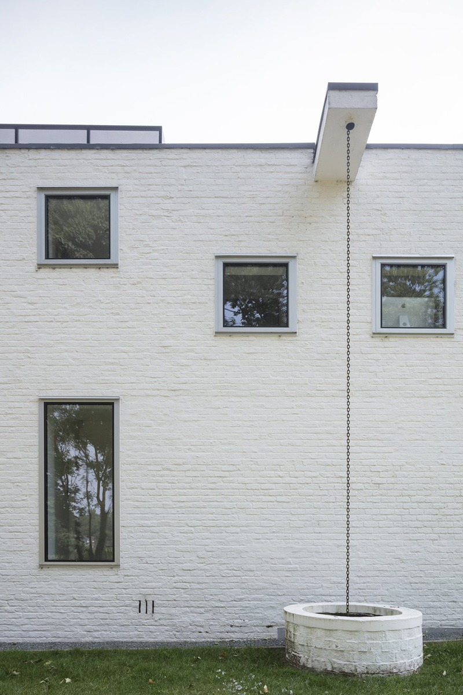
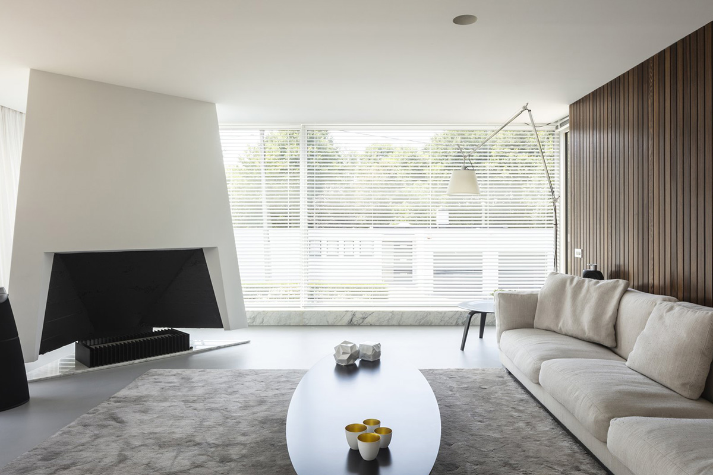

Eind jaren 50 ontwierp architect Lucien Engels zijn eigen woning in Elewijt, een tijdloze blikvanger die de tand des tijds moeiteloos heeft doorstaan. Het modernistische ontwerp; een zwevende doos in glas en beton, getuigt van eenvoud, functionaliteit en vooruitstrevende visie. Grote glaspartijen, open leefruimtes en een sterke verbinding met de omgeving typeren dit architecturale meesterwerk.



Vandaag is deze unieke woning beschermd als monument en werd ze met veel zorg en precisie gerenoveerd door Martha Bouwteam, in nauwe samenwerking met architect Thomas Van Looy van Studio 22. De uitdaging? De historische waarde en ziel van het gebouw behouden, terwijl het comfort en de functionaliteit aan de hedendaagse normen werden aangepast.
Bij deze renovatie stond het respect voor de originele structuur centraal:
De kenmerkende zwevende betonnen vorm en grote glaspartijen werden minutieus gerestaureerd.
Binnenin werd het modernistische karakter behouden en aangevuld met subtiele ingrepen die hedendaagse luxe bieden zonder afbreuk te doen aan het oorspronkelijke ontwerp.
Dit prachtige project is een harmonie tussen verleden en heden, waarbij vakmanschap en oog voor detail ervoor zorgen dat dit architecturale erfgoed nog vele generaties lang kan schitteren.
We zijn ontzettend trots op het eindresultaat en de fijne samenwerking met Studio 22. Het Huis Lucien Engels is niet alleen een renovatie, maar ook een ode aan modernistische architectuur.
Een geslaagd huwelijk tussen historisch karakter en hedendaags wooncomfort.
Met dit project wonnen we in 2018 de prestigieuze "Dwell Renovation Awards", een erkenning waar we bijzonder trots op zijn!
Architect: Studio 22 Architects
Project: Renovatie


